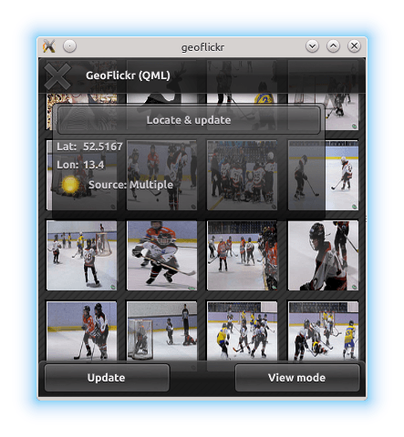

GeoFlickr (QML)
The GeoFlickr example shows how to use the user's current position to fetch local content from a web service.
This is a small example, illustrating one of the very core parts of the Qt Positioning API: the ability to retrieve and use the user's current geographic position.
Key QML types shown in this example:

Running the Example
To run the example from Qt Creator, open the Welcome mode and select the example from Examples. For more information, visit Building and Running an Example.
Retrieving the Current Position
Retrieving the user's current position is achieved using the PositionSource type. In this example, we instantiate the PositionSource as part of the GeoTab component (the floating "window" describing current position and status).
PositionSource {
id: positionSource
onPositionChanged: { planet.source = "images/sun.png"; }
onSourceErrorChanged: {
if (sourceError == PositionSource.NoError)
return
console.log("Source error: " + sourceError)
activityText.fadeOut = true
stop()
}
onUpdateTimeout: {
activityText.fadeOut = true
}
}
When the "Locate and update" button is pressed, we first interrogate the PositionSource to check if it has an available backend for positioning data. If it does not, we fall back to using a pre-recorded NMEA log for demonstration. We then instruct the PositionSource to update.
Button {
id: locateButton
text: "Locate & update"
onClicked: {
if (positionSource.supportedPositioningMethods ===
PositionSource.NoPositioningMethods) {
positionSource.nmeaSource = "nmealog.txt";
sourceText.text = "(filesource): " + printableMethod(positionSource.supportedPositioningMethods);
}
positionSource.update();
}
}
To share the new position data with the rest of the application, we use properties that we have created on the GeoTab component:
property variant coordinate
Using the Current Position
The longitude and latitude values retrieved here are eventually set in the properties on the RestModel component. The RestModel is an XmlListModel, which retrieves XML data from a URL and creates a data model by performing XPath queries on it.
In this case, it retrieves data from the Flickr REST API online, based on our current position
XmlListModel { property variant coordinate source: "https://api.flickr.com/services/rest/?" + "min_taken_date=2000-01-01+0:00:00&" + "extras=date_taken&" + "method=flickr.photos.search&" + "per_page=30&" + "sort=date-taken-desc&" + "api_key=e36784df8a03fea04c22ed93318b291c&" + "lat=" + coordinate.latitude + "&lon=" + coordinate.longitude; query: "/rsp/photos/photo" XmlRole { name: "title"; query: "@title/string()" } XmlRole { name: "datetaken"; query: "@datetaken/string()" } XmlRole { name: "farm"; query: "@farm/string()" } XmlRole { name: "server"; query: "@server/string()" } XmlRole { name: "id"; query: "@id/string()" } XmlRole { name: "secret"; query: "@secret/string()" } }
This model data is then shown in a variety of Qt Quick views to produce the example application.